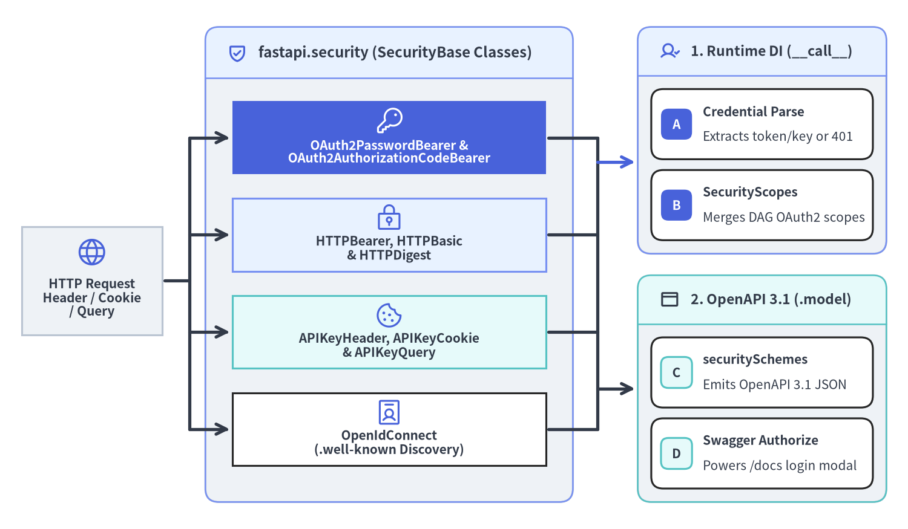
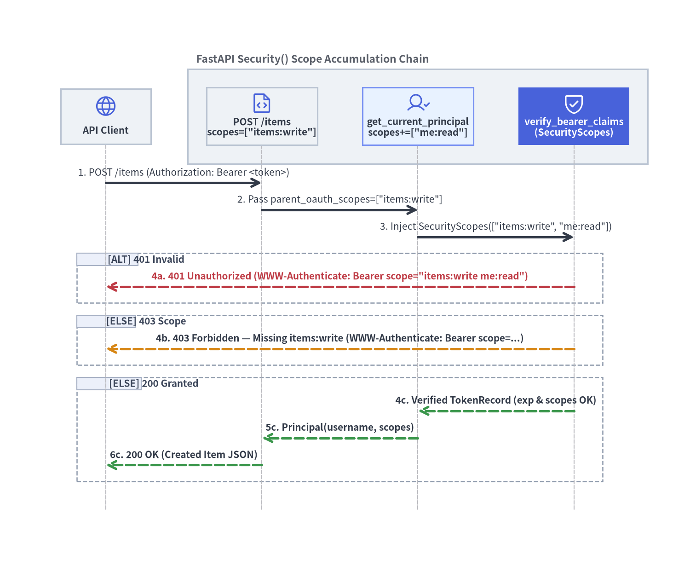

認証・OAuth2 スコープ認可・資格情報抽出器
FastAPI v0.162.2 の fastapi.security モジュールは、実行時の資格情報抽出と OpenAPI 3.1 スキーマ生成を単一のクラス階層へ統合します。すべての SecurityBase 派生クラスは、Dependant DAG 内でリクエストの資格情報を解析すると同時に、components.securitySchemes および Swagger UI の対話型 「Authorize」 モーダルを自動構成します。

1. fastapi.security の二重責務アーキテクチャ
すべての URL パスを一律に横取り（インターセプト）する従来型ミドルウェアとは異なり、FastAPI はセキュリティ機構を Dependant DAG に直接組み込みます。fastapi/security/* 内の各クラスは SecurityBase を継承し、1 つの Python インスタンスで次の 2 つの役割を同時に担います。
- 実行時の資格情報抽出器（
async def __call__(self, request: HTTPConnection)）:Authorizationヘッダー・カスタムヘッダー・Cookie・クエリパラメータを解析します。デフォルトのauto_error=Trueでは資格情報が欠落または不正な時点で仕様準拠のWWW-Authenticateチャレンジヘッダー付き401 Unauthorizedを即時送出します。一方auto_error=Falseを指定すると欠落時にNoneを返すため、複数スキームのフォールバックや任意認証を簡潔に合成できます。 - OpenAPI 3.1 メタデータ定義（
self.modelとself.scheme_name）:/openapi.json生成時に_get_openapi_security_definitions()（fastapi/openapi/utils.py）が各ルートのDependant木を走査し、security_scheme.modelをcomponents.securitySchemesへ直列化するとともに、オペレーション単位のsecurity要件と Swagger UI（/docs）の鍵アイコン・「Authorize」 ダイアログを自動有効化します。
セキュリティクラス（fastapi.security） |
抽出対象とフォーマット | 戻り値の型（auto_error=True 時） |
OpenAPI 3.1 type / scheme |
|---|---|---|---|
OAuth2PasswordBearer |
Authorization: Bearer <token> |
str（生の Bearer トークン文字列） |
oauth2（flows.password） |
OAuth2AuthorizationCodeBearer |
Authorization: Bearer <token> |
str（生の Bearer トークン文字列） |
oauth2（flows.authorizationCode） |
HTTPBearer |
Authorization: Bearer <token> |
HTTPAuthorizationCredentials |
http（scheme: "bearer"） |
HTTPBasic |
Authorization: Basic <b64> |
HTTPBasicCredentials（username, password） |
http（scheme: "basic"） |
APIKeyHeader / Cookie / Query |
指定名の Header・Cookie・Query | str（API キー文字列） |
apiKey（in: header | cookie | query） |
OpenIdConnect |
Authorization ヘッダー + Discovery URL |
str（生ヘッダー。JWT 検証は継承等で実装） |
openIdConnect（openIdConnectUrl） |
2. OAuth2 Bearer フローと階層的 SecurityScopes
通常の Depends() に対し、Security(callable, scopes=[...])（fastapi/param_functions.py）は宣言的な OAuth2 権限スコープ文字列を付与します。たとえばエンドポイントが get_current_principal に対して scopes=["items:write"] を要求し、さらにその下位の verify_bearer_claims が scopes=["me:read"] を要求する場合、FastAPI は _get_oauth_scopes() によって parent_oauth_scopes と own_oauth_scopes を上位から下位へ順序を保ったままマージし、SecurityScopes 引数へ一括注入します。

2.1 401 Unauthorized と 403 Forbidden の厳密な使い分け
RFC 6750 および RFC 9110 では、本人確認（認証）の失敗と権限スコープ不足（認可失敗）に対して明確に異なる HTTP ステータスコードを規定しています。
401 Unauthorized（未認証・無効または期限切れトークン）:Authorizationヘッダーの欠落、フォーマット不正、署名検証エラー、または有効期限（exp）超過時に返します。レスポンスには必ずWWW-Authenticate: Bearer（スコープ指定時はBearer scope="..."）を付与します。403 Forbidden（認証済みだが要求スコープ不足）: トークン自体は正当なプリンシパルを示しているものの、security_scopes.scopesに含まれる必須スコープのいずれかがトークンに付与されていない場合に返します。headers={"WWW-Authenticate": f'Bearer scope="{security_scopes.scope_str}"'}を添えることで、クライアントは/tokenで再取得すべきスコープセットを正確に判別できます。
2.2 /token エンドポイントと階層的 SecurityScopes の実装
OAuth 2.0 仕様に基づき、OAuth2PasswordRequestForm は JSON ではなく application/x-www-form-urlencoded 形式のフォームフィールド（username・password・空白区切りの任意 scope）を受け取ります（解析には python-multipart が使用されます。詳細は Path・Query・Header・Cookie・Body を参照）。パスワード照合には必ずメモリハードな鍵導出関数（scrypt や Argon2）と secrets.compare_digest を組み合わせ、トークンには有限の有効期限（exp）を設定し、署名鍵やシークレットをソースコードへハードコードしないようにします。
import hashlib
import secrets
import time
from dataclasses import dataclass
from typing import Annotated
from fastapi import Depends, FastAPI, HTTPException, Security, status
from fastapi.security import (
OAuth2PasswordBearer,
OAuth2PasswordRequestForm,
SecurityScopes,
)
from pydantic import BaseModel
def hash_password(password: str, salt: bytes) -> bytes:
return hashlib.scrypt(password.encode("utf-8"), salt=salt, n=16384, r=8, p=1)
@dataclass(frozen=True)
class StoredUser:
salt: bytes
pw_hash: bytes
allowed_scopes: set[str]
class TokenRecord(BaseModel):
sub: str
scopes: list[str]
exp: float
class Principal(BaseModel):
username: str
scopes: list[str]
alice_salt = secrets.token_bytes(16)
bootstrap_password = secrets.token_urlsafe(12)
users_db: dict[str, StoredUser] = {
"alice": StoredUser(
salt=alice_salt,
pw_hash=hash_password(bootstrap_password, alice_salt),
allowed_scopes={"me:read", "items:read", "items:write"},
)
}
token_store: dict[str, TokenRecord] = {}
oauth2_scheme = OAuth2PasswordBearer(
tokenUrl="/token",
scopes={
"me:read": "Read current user profile",
"items:read": "Read inventory items",
"items:write": "Create or update inventory items",
},
)
app = FastAPI()
@app.post("/token")
async def issue_token(
form_data: Annotated[OAuth2PasswordRequestForm, Depends()],
) -> dict[str, str]:
user = users_db.get(form_data.username)
candidate_hash = hash_password(
form_data.password,
user.salt if user else alice_salt,
)
expected_hash = user.pw_hash if user else hash_password("invalid", alice_salt)
if not user or not secrets.compare_digest(candidate_hash, expected_hash):
raise HTTPException(
status_code=status.HTTP_401_UNAUTHORIZED,
detail="Invalid username or password",
headers={"WWW-Authenticate": "Bearer"},
)
granted = [s for s in form_data.scopes if s in user.allowed_scopes]
raw_token = secrets.token_urlsafe(24)
token_store[raw_token] = TokenRecord(
sub=form_data.username,
scopes=granted,
exp=time.time() + 900,
)
return {"access_token": raw_token, "token_type": "bearer"}
async def verify_bearer_claims(
security_scopes: SecurityScopes,
token: Annotated[str, Depends(oauth2_scheme)],
) -> TokenRecord:
auth_header = (
f'Bearer scope="{security_scopes.scope_str}"'
if security_scopes.scopes
else "Bearer"
)
record = token_store.get(token)
if record is None or record.exp < time.time():
raise HTTPException(
status_code=status.HTTP_401_UNAUTHORIZED,
detail="Invalid or expired bearer token",
headers={"WWW-Authenticate": auth_header},
)
granted_set = set(record.scopes)
for required_scope in security_scopes.scopes:
if required_scope not in granted_set:
raise HTTPException(
status_code=status.HTTP_403_FORBIDDEN,
detail=f"Not enough permissions (missing {required_scope})",
headers={"WWW-Authenticate": auth_header},
)
return record
async def get_current_principal(
claims: Annotated[
TokenRecord,
Security(verify_bearer_claims, scopes=["me:read"]),
],
) -> Principal:
return Principal(username=claims.sub, scopes=claims.scopes)
@app.post("/items")
async def create_item(
name: str,
principal: Annotated[
Principal,
Security(get_current_principal, scopes=["items:write"]),
],
) -> dict[str, object]:
return {"item": name, "created_by": principal.username}
app.openapi()["paths"]["/items"]["post"]["security"] を確認すると [{"OAuth2PasswordBearer": ["items:write", "me:read"]}] が生成されており、ルート直下の "items:write" とサブ依存の "me:read" が実行時の検証ロジックと OpenAPI 3.1 スキーマの双方で自動統合されていることが分かります（OpenAPI 出力の詳細は レスポンス直列化と OpenAPI 3.1 も参照してください）。
3. 定数時間 HTTPBasic 検証と APIKeyHeader フォールバック
社内運用コンソールや診断 API では、自動化ジョブ向けの API キー認証（X-API-Key） と、オペレーターのブラウザアクセス向けの HTTP Basic 認証（HTTPBasic） を両方受け付けたい場面が多くあります。複数の SecurityBase インスタンスで auto_error=False を設定すれば、単一の依存関数内で優先順位付きのフォールバック認証を安全に実装できます。
3.1 secrets.compare_digest によるタイミング攻撃対策
パスワードや API キーの比較に Python の == 演算子を使用してはいけません。== は先頭から最初の不一致バイトが見つかった時点で短絡終了するため、応答時間の統計差から先頭一致長が漏洩します。必ず比較対象を UTF-8 バイト列へエンコードし、username と password の 両方の secrets.compare_digest() を先に評価し終えてから 条件分岐を行ってください。
import os
import secrets
from dataclasses import dataclass
from typing import Annotated
from fastapi import Depends, FastAPI, HTTPException, Security, status
from fastapi.security import APIKeyHeader, HTTPBasic, HTTPBasicCredentials
@dataclass(frozen=True)
class OpsAuthSettings:
basic_user: str
basic_password: str
service_api_key: str
ephemeral_pw = os.environ.get("OPS_BASIC_PASSWORD") or secrets.token_urlsafe(16)
ephemeral_key = os.environ.get("OPS_SERVICE_API_KEY") or secrets.token_urlsafe(24)
def get_ops_auth_settings() -> OpsAuthSettings:
return OpsAuthSettings(
basic_user="ops_admin",
basic_password=ephemeral_pw,
service_api_key=ephemeral_key,
)
basic_scheme = HTTPBasic(realm="OpsConsole", auto_error=False)
api_key_header = APIKeyHeader(name="X-API-Key", auto_error=False)
async def require_ops_caller(
settings: Annotated[OpsAuthSettings, Depends(get_ops_auth_settings)],
api_key: Annotated[str | None, Security(api_key_header)] = None,
basic_creds: Annotated[HTTPBasicCredentials | None, Security(basic_scheme)] = None,
) -> dict[str, str]:
if api_key is not None:
key_ok = secrets.compare_digest(
api_key.encode("utf-8"),
settings.service_api_key.encode("utf-8"),
)
if key_ok:
return {"principal": "automation_bot", "method": "api_key"}
if basic_creds is not None:
# ユーザー名存在有無のタイミング漏洩を防ぐため、必ず両方のダイジェスト比較を先に実行する
user_ok = secrets.compare_digest(
basic_creds.username.encode("utf-8"),
settings.basic_user.encode("utf-8"),
)
pass_ok = secrets.compare_digest(
basic_creds.password.encode("utf-8"),
settings.basic_password.encode("utf-8"),
)
if user_ok and pass_ok:
return {"principal": basic_creds.username, "method": "http_basic"}
raise HTTPException(
status_code=status.HTTP_401_UNAUTHORIZED,
detail="Valid X-API-Key or HTTP Basic credentials required",
headers={"WWW-Authenticate": 'Basic realm="OpsConsole"'},
)
app = FastAPI()
@app.get("/ops/health-audit")
async def ops_health_audit(
caller: Annotated[dict[str, str], Depends(require_ops_caller)],
) -> dict[str, str]:
return caller
[!TIP] ブラウザ向けセッション Cookie（
APIKeyCookie）を発行する際は、__Host-プレフィックス・HttpOnly・Secure・SameSite="lax"属性と状態変更リクエストへの CSRF 防御を徹底し、エッジプロキシで TLS 1.2 以上を終端してください。CORS や TrustedHost を含む ASGI ミドルウェア設計については次章 ASGI ミドルウェアとスレッドプール制御 へ進んでください。